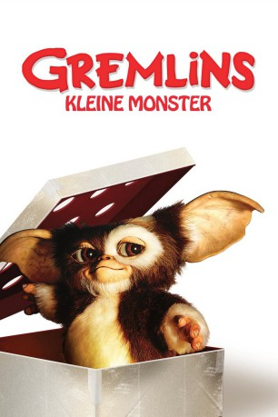

#1782 Gremlins - Kleine Monster
Alternativ: Gremlins
 
 IMDB-Wertung: 7.2 / 10
IMDB-Wertung: 7.2 / 10  Metascore: 70
Metascore: 70 
Warnung: halte sie von Wasser fern – halte sie von Licht fern – aber das Wichtigste überhaupt: egal, wie sehr sie betteln: in keinem Fall dürfen sie nach Mitternacht gefüttert werden – niemals! Drei mysteriöse Warnungen, bevor Billy Pelzer sein neues kuscheliges Haustier in die Arme schließen kann. Doch er hätte besser auf die Warnungen gehört, denn aus dempossierlichen Weihnachtsgeschenk wird ein Albtraum für eine ganze Stadt. Ein kleines, drolliges Tier vermehrt sich in sekundenschnelle und es entstehen grauenvolle und doch hochintelligente Monster.
Jahr: 1984
Dauer: 106 Minuten
FSK: 16
Land: USA Studio: Warner Bros.Tonspuren: DD5.1 - ,
Untertitel:
Auflösung: 1080p (1920x1080) Größe: 10752 MB
Genre: Horror, Komödie, Weihnachten
Regisseur: Joe Dante
Drehbuch: Chris Columbus
Soundtrack: Jerry Goldsmith
Darsteller:
- Hoyt Axton als Randall Peltzer
- Keye Luke als Grandfather, Mr. Wing
- Don Steele als Rockin' Ricky Rialto
- Scott Brady als Sheriff Frank
 Corey Feldman als Pete Fountaine
Corey Feldman als Pete Fountaine Harry Carey Jr. als Mr. Anderson
Harry Carey Jr. als Mr. Anderson- Zach Galligan als Billy Peltzer
 Dick Miller als Murray Futterman
Dick Miller als Murray Futterman- Phoebe Cates als Kate Beringer
- Polly Holliday als Ruby Deagle
 Donald Elson als Man on Street
Donald Elson als Man on Street- Belinda Balaski als Mrs. Joe Harris
 Edward Andrews als Mr. Corben
Edward Andrews als Mr. Corben Judge Reinhold als Gerald Hopkins
Judge Reinhold als Gerald Hopkins- Chuck Jones als Mr. Jones
- Kenny Davis als Dorry
 Frances Lee McCain als Lynn Peltzer
Frances Lee McCain als Lynn Peltzer Glynn Turman als Roy Hanson
Glynn Turman als Roy Hanson Nicky Katt als Schoolchild
Nicky Katt als Schoolchild Jonathan Banks als Deputy Brent
Jonathan Banks als Deputy Brent- James MacKrell als Lew Landers, WDHB-TV reporter
 Frank Welker als Stripe / Mogwai / Gremlins
Frank Welker als Stripe / Mogwai / Gremlins- Howie Mandel als Gizmo
 Michael Winslow als Mogwai / Gremlins
Michael Winslow als Mogwai / Gremlins Peter Cullen als Mogwai / Gremlins
Peter Cullen als Mogwai / Gremlins Bob Bergen als Mogwai / Gremlins
Bob Bergen als Mogwai / Gremlins- Michael Sheehan als Mogwai / Gremlins
- Bob Holt als Mogwai / Gremlins
- Tom Bergeron als TV News Reporter , uncredited
- Jerry Goldsmith als Man in Telephone Booth Glancing at Camera , uncredited
 Dean Rader-Duval als Ron , uncredited
Dean Rader-Duval als Ron , uncredited- Robby the Robot als Robot , uncredited
 William Schallert als Father Bartlett , uncredited
William Schallert als Father Bartlett , uncredited Steven Spielberg als Man in Electric Wheelchair , uncredited
Steven Spielberg als Man in Electric Wheelchair , uncredited Kenneth Tobey als Mobil Gas Station Attendant , uncredited
Kenneth Tobey als Mobil Gas Station Attendant , uncredited- John Louie als Chinese Boy
- Susan Burgess als Little Girl
- Arnie Moore als Alex
- Danny Llewelyn als Hungry Harris Child
- Lois Foraker als Bank teller
- Tracy Wells als Schoolchild
- John C. Becher als Dr. Molinaro
- Gwen Willson als Mrs. Molinaro
 Jackie Joseph als Sheila Futterman
Jackie Joseph als Sheila Futterman Joe Brooks als Dave Meyers, Santa
Joe Brooks als Dave Meyers, Santa- Fred Newman als Mogwai / Gremlins
- Mark Dodson als Mogwai / Gremlins
- Mushroom als Barney
- Karen Bean als Girl in Town Square , uncredited
- Marvin Miller als Robby The Robot , uncredited
Datei: X:\2-Dilogie(G-M)\Gremlins\Gremlins - Kleine Monster (1984, FSK16, 1920x1080).mkv seit 19.08.2015
Festplatte: HD Collection-2(A-Z)-3(A-M)
 Alle Filme aus Gruppe '2-Dilogie(G-M)\Gremlins'
Alle Filme aus Gruppe '2-Dilogie(G-M)\Gremlins'